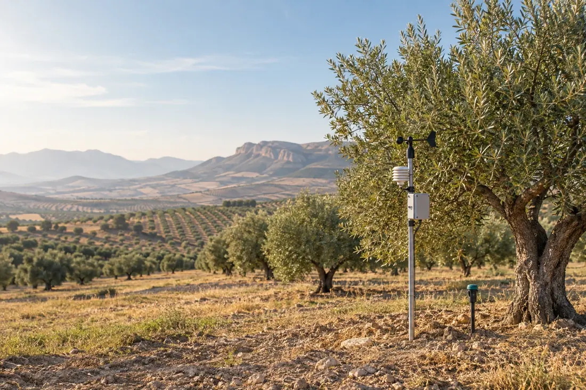

Orientación vegetal con IA
Envía fotografías de tus plantas y recibe posibles causas, signos observados y primeros pasos prudentes para valorar el problema.
Conocer TecRural ↗Meteorología local, orientación vegetal con IA y sensores IoT para pequeños agricultores y cooperativas del Altiplano de Granada.

TecRural acerca tecnología útil, comprensible y asequible a agricultores, cooperativas y entidades rurales.
Envía fotografías de tus plantas y recibe posibles causas, signos observados y primeros pasos prudentes para valorar el problema.
Conocer TecRural ↗Previsión local, alertas de helada, lluvia y viento, e informes en lenguaje claro para planificar labores y riego.
Consultar meteorología ↗Prototipos de bajo coste para observar humedad del suelo y condiciones ambientales, con datos y alertas vinculados al servicio.
Consultar un piloto ↓Escuchamos qué necesitas observar o decidir. Después buscamos una solución sencilla que aporte información útil.
Cultivo, zona, problema y decisión que quieres tomar.
Datos meteorológicos, observaciones y sensores cuando ayuden.
Convertimos datos técnicos en información fácil de consultar.
Probamos las herramientas con las personas que las utilizan.
TecRural trabaja para acercar soluciones al pequeño agricultor y a las entidades rurales, con atención al contexto y a los cultivos de la zona.
El análisis de imágenes es una orientación preliminar. No sustituye la valoración de un técnico agrícola ni un análisis de laboratorio. Precios orientativos de lanzamiento; el alcance final se confirma antes de contratar.
Prueba la herramienta agroclimática de TecRural y encuentra información útil para tu entorno.
Cuéntanos qué necesitas observar, anticipar o resolver. La app de meteorología es también la puerta de entrada para conocer las herramientas de TecRural.
Los precios publicados son orientativos. Para diagnóstico vegetal, el resultado es preliminar y puede requerir revisión técnica especializada.